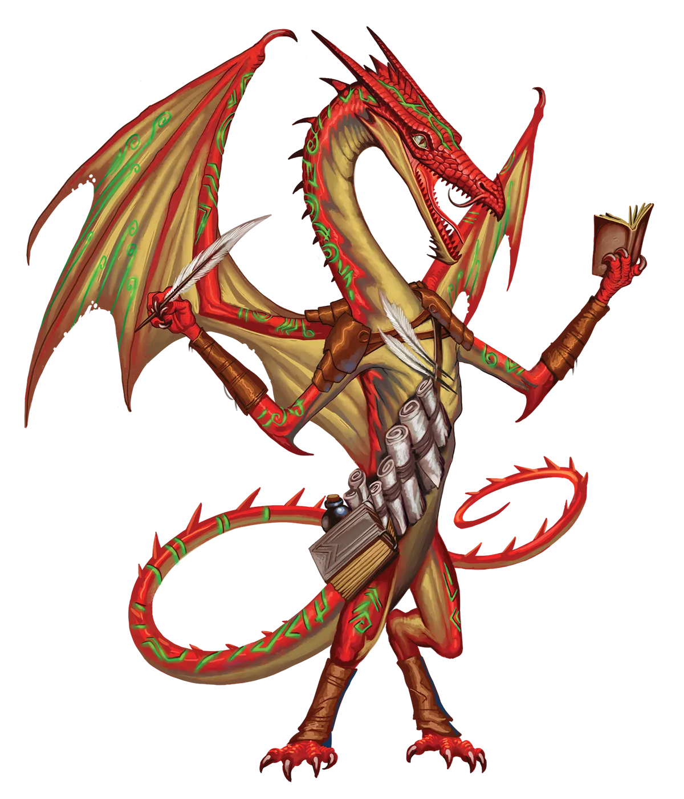

朱红谎言
如果你和我一样，你对朱红龙类的主要关切是，如何从他们扭曲叙事中那些极度夸张的虚构里获取往往极其宝贵的真相。基于来之不易的个人经验，我的建议是忽略形容词和描述词，转而数数字数。
朱红龙 Vermillion Dragon |
|
|
朱红龙类喜爱讲述各种故事，尤其是基于自身或相识之人经历所编造的高大传说。对于朱红龙类而言，兴奋是生活的调味剂，但即便如此，许多朱红龙类也不愿以永恒仪式所要求的高速节奏来增长魔法与力量。尽管如此，那些冒险中的永恒朱红龙类所经历的精彩故事，正是传统派朱红龙类渴望学习、润色并复述的素材。这导致了一个在龙类不同血脉中独一无二的现象：有时传统派朱红龙类会鼓励朋友或亲属成为永光龙类，而他们自己却保持传统。从他们的视角看，这样既能按自己的步调行事，又能从勇敢的同伴那里保证源源不断的离奇冒险故事。当然，随着故事从现实经永恒朱红龙类的复述，再经传统派朱红龙类的诠释，故事有越传越夸张的倾向。一旦经过足够多朱红龙类的过滤，即便像清理下水道中的凶暴老鼠这样平淡无奇的冒险，也能变成阻止数百万智力老鼠组成的瘟疫集群吞噬整个王国的史诗传奇。即便如此，故事往往保留核心细节的准确性，尽管有所夸大，但听来总是令人愉悦。 虽然朱红龙类可以独自踏上冒险，从而成为自己英勇故事的唯一见证者，但他们更倾向于加入冒险队伍，因为伙伴们的冒险故事往往更精彩。永恒朱红龙类偏爱加入那些计划着听起来能引出伟大故事的刺激冒险的队伍。一个目标过于谦逊或被动的队伍，对朱红龙类的吸引力远不及目标略显野心勃勃的队伍。至于队伍的个体成员，朱红龙类欣赏性格多样、意见相左而非行动完全一致的队伍，以及那些复杂历史与关系常常以有趣方式闯入冒险的队伍。这些都能构成更好的故事。但若他们找到的队伍不具备这些特质，也不必担心！朱红龙类可以在复述时自行润色一些。朱红龙类冒险者尤其偏爱擅长讲述和润色故事的职业，如吟游诗人。那些让他们能够进行夸张表演的职业，如武僧、游荡者或术士，则紧随其后。 朱红谎言 如果你和我一样，你对朱红龙类的主要关切是，如何从他们扭曲叙事中那些极度夸张的虚构里获取往往极其宝贵的真相。基于来之不易的个人经验，我的建议是忽略形容词和描述词，转而数数字数。 朱红龙特质 Vermillion Dragon Traits 你出身于一脉酷爱寻求刺激、热衷夸夸其谈讲述传奇故事的朱红龙世系。 |
  |